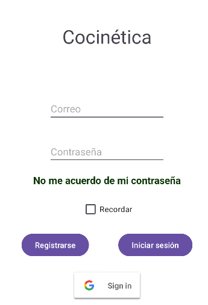

¿Qué es Cocinetica?
Cocinetica es tu espacio culinario digital. Puedes compartir tus propias recetas, explorar las de otros usuarios, guardar tus favoritas y llevar tu cocina al siguiente nivel con solo unos clics.
Cómo ver tu perfil
Una vez hayas iniciado sesión en la aplicación, verás cuatro botones en la parte inferior. El último de ellos te lleva a tu perfil.
En esta sección podrás ver:
- Tus recetas publicadas (con opción de acceder a ellas o eliminarlas).
- Tus comentarios realizados.
- Tu imagen de perfil, nombre de usuario y descripción.
Al pulsar sobre tu imagen puedes cambiarla: ya sea tomando una nueva foto o eligiéndola desde la galería. Además, hay un botón de "Editar" donde podrás modificar tu usuario, descripción y gestionar opciones importantes como:
- Cambiar tu contraseña.
- Cerrar sesión.
- Borrar tu cuenta.
- Volver al apartado principal de cuenta.

Cómo editar el perfil
Dentro de tu perfil, pulsa el botón "Editar" para actualizar tu nombre de usuario, imagen, descripción u otra información personal. También puedes acceder desde ahí a opciones para cambiar la contraseña, cerrar sesión o eliminar tu cuenta.

Cómo crear una receta
Pulsa el botón "Crear receta" en la página principal o en tu perfil. Rellena los campos con ingredientes, pasos y añade una imagen si quieres.
Cómo ver una receta
Haz clic en cualquier receta que encuentres para ver sus detalles, incluyendo pasos, ingredientes, tiempo estimado y comentarios.

Cómo buscar una receta
Utiliza la barra de búsqueda para encontrar recetas por nombre, ingrediente o usuario. También puedes usar filtros para categorías específicas.

Cómo guardar una receta
Haz clic en el icono de guardar  en una receta para añadirla a tu lista de recetas guardadas, si estan guardadas el icono está así
en una receta para añadirla a tu lista de recetas guardadas, si estan guardadas el icono está así 
Las recetas que se guardan se guardan aqui:
Cómo valorar una receta
Puedes valorar una receta usando estrellas o un sistema de puntuación. Esto ayuda a destacar las mejores recetas y da feedback al creador.
Cómo comentar una receta
Abajo de cada receta verás una sección de comentarios. Puedes escribir tu experiencia, sugerencias o simplemente agradecer al autor.

Cómo registrarte o iniciar sesión
Ve a la pantalla de inicio de sesión desde el botón "Cuenta" en el menú. Allí puedes registrarte con tu correo electrónico y una contraseña segura, o iniciar sesión con tu cuenta de Google usando el botón correspondiente.

Si no te acuerdas de la contraseña te enviara un correo para cambiarla de nuevo